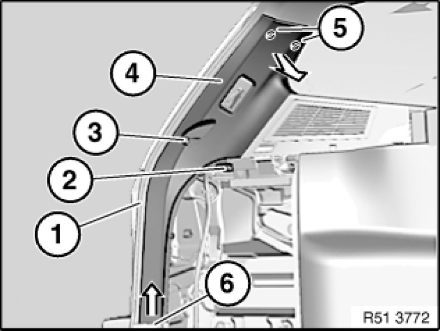
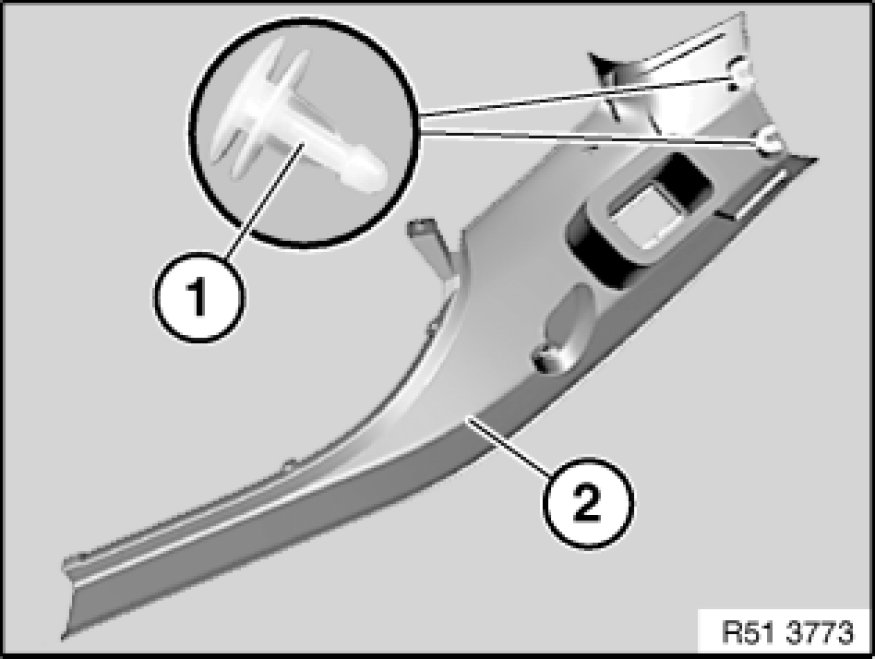

Pillar Trim
51 43 252 - Replacing trim panel for rear left or right roof pillar (D-pillar)

Necessary preliminary tasks:
- Remove flap in luggage compartment panel Removing and Installing/Replacing Flap In Luggage Compartment Trim, Left or Right
- Remove luggage compartment light Removing and Installing/Replacing Luggage Compartment Light (D-Pillar)

Detach mucket (1) in area of trim panel for roof pillar (4).
Remove screws (2) and (3).
Unclip trim panel for roof pillar (4) at mounting points (5) in direction of arrow.
Feed trim panel for roof pillar (4) upwards out of trim (6) and remove.
Installation:
Make sure trim panel for roof pillar (4) is correctly seated in trim (6).

Installation:
If necessary, lever out clips (1) remaining in bore.
If necessary, replace faulty clips (1).
Feed in trim panel for roof pillar (2) preassembled with clips (1) first at bottom, then position on associated bores and clip into place.